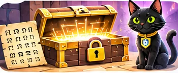

📖 Історія: нова справа
Буч організовує клуб секретних листівок. Кожна команда має вигадати власну таблицю символів, зашифрувати послання та перевірити, чи його можна відновити.
Сюжетна інтерактивна майстерка

Буч організовує клуб секретних листівок. Кожна команда має вигадати власну таблицю символів, зашифрувати послання та перевірити, чи його можна відновити.
Чому без ключа повідомлення важко прочитати?
Шифр заміни використовує таблицю відповідностей. Такий шифр чудовий для гри, але не підходить для захисту справжніх секретів.
Створіть таблицю символів і випробуйте її на повідомленні.
Наш демонстраційний ключ: К → 🐈, О → 🌙, Т → ⭐, И → 🌿, А → 🔑, Б → 🍀, У → ☀️, Ч → 🌸, М → 🦊, Р → 🎈.
Придумайте нові відповідності щонайменше для п'яти літер. Запишіть їх і запропонуйте другові розшифрувати повідомлення.
Смайликовий шифр — творча гра, не захист реальних приватних даних.
Чи зможе інша людина відновити текст за вашим ключем?
Сформулюйте власне правило або коротку інструкцію для друга. Знайдіть приклад, де воно стане корисним.
Запишіть, що Ви перевірили, що змінилося під час експерименту і який висновок зробили.
У вікні друку оберіть «Зберегти як PDF». Ваші дані залишаються в браузері.